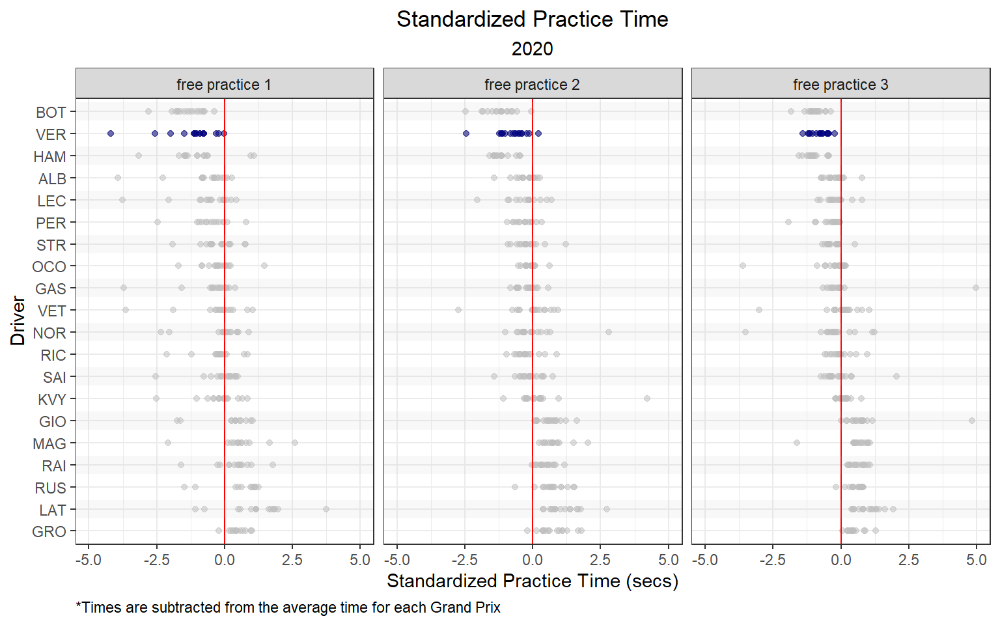
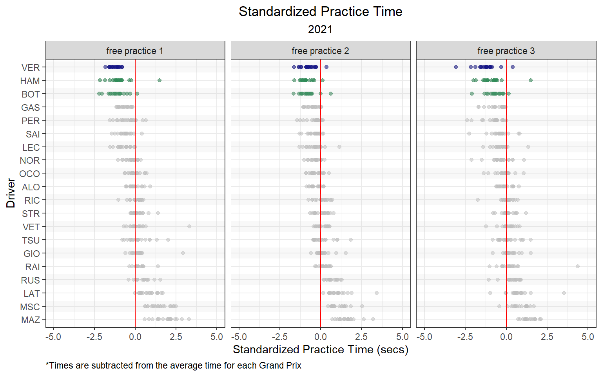
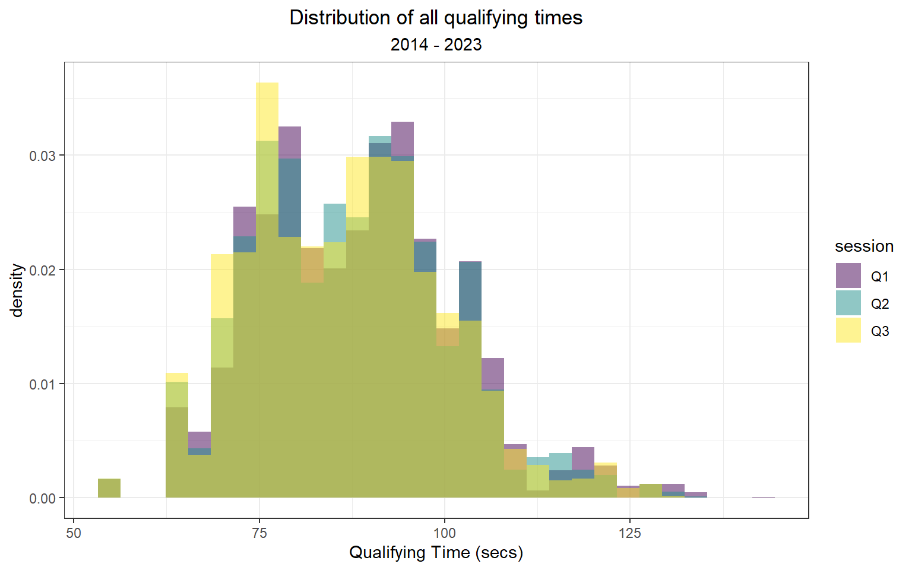

Chapter 4 Practice times vs Qualifying Times
As mentioned in previous chapters, some runs during practice sessions can often be used to simulate qualifying or race pace. For instance, FP1 is typically used to test the car and ensure it is working as expected, while FP2 and FP3 are often used to test the car’s performance on long runs and the car’s speed over laps, respectively. Unsurprisingly, one would expect practice times to correlate to qualifying times. This chapter will take a deep-dive into that relationship and try to better understand it.
Below, we can plot the best time set during FP1 versus the best time during Q1. For the most part, there is a near 1:1 ratio. However, there are several outlying clusters of times that don’t follow a 1:1 ratio.
combined_historical %>%
ggplot(aes(Time_1, Q1)) +
geom_point(alpha = 0.2) +
theme_bw() +
labs(x = 'Best Time during FP1 (secs)',
y = 'Best Time during Q1 (secs)')
One of these outlying clusters is data collected from the Malaysian Grand Prix in 2017. Free Practice 1 of the Malaysian Grand Prix in 2017 was delayed for half an hour due to heavy rain at the Sepang International Circuit. Max Verstappen eventually finished the wet FP1 session with a fastest time of 1:48.962. Qualifying was not impacted by rain, and Lewis Hamilton took pole with a time of 1:30.076. In the figure below, we can clearly see this relationship displayed by the flatter slope for the Malaysian Grand Prix in 2017.
combined_historical %>%
mutate(malaysia_2017 = ifelse(track == 'malaysia' & year == 2017, 'Malaysia 2017', 'No')) %>%
ggplot(aes(Time_1, Q1)) +
geom_point(aes(col = malaysia_2017), alpha = 0.5, show.legend = T) +
theme_bw() +
labs(x = 'Best Time during FP1 (secs)',
y = 'Best Time during Q1 (secs)') +
gghighlight(malaysia_2017 == 'Malaysia 2017', use_direct_label = FALSE) +
scale_color_manual('', values = c('Malaysia 2017' = 'black'))
How to create a custom color scale in ggplot
At times, creating custom color scales can be very convenient. The simplest way to create a custom color scale is by using scale_color_manual(). In the figure above, I used the following function to color data for Malaysia 2017 black:
scale_color_manual('', values = c('Malaysia 2017' = 'black'))
For more information on using scale_color_manual() in ggplot2, visit this link: https://ggplot2.tidyverse.org/reference/scale_manual.html
I want to estimate the relationship between FP1 times and Q1 times, but these outlying clusters are compromising the relationship. In the Malaysia example above, rain was the root cause for a distinctly different slope (FP1 vs Q1). I want to remove these abnormal sessions, but it would be quite tedious to research all FP1 or Q1 sessions that were impacted by rain. However, I could try and utilize exploratory data analysis (EDA) and data wrangling to filter out abnormal times.
For the vast majority of Grands Prix, the slope of this relationship (FP1 times vs Q1 times) is slightly larger than 1. I’ll use a histogram below to plot the distribution of ratios of all FP1:Q1 times.
combined_historical %>%
mutate(ratio = Time_1 / Q1) %>%
ggplot(aes(ratio)) +
geom_histogram(bins = 100, alpha = 0.5) +
theme_bw() +
labs(x = 'Ratio of FP1:Q1 Times',
title = 'Distribution of all Ratios of FP1:Q1 Times',
subtitle = '2014 - 2022') +
scale_x_continuous(limits = c(0.7, 1.3),
breaks = c(0.7, 0.8, 0.9, 1, 1.1, 1.2, 1.3))
There are three separate peaks in this distribution:
- slightly larger than 1.0
- just below 0.90
- at approximately 1.15
Knowing this information, I will try to filter out any ratios lower than 0.95 or larger than 1.10.
combined_historical %>%
mutate(ratio = Time_1 / Q1) %>%
filter(ratio >= 0.95 & ratio <= 1.10) %>%
ggplot(aes(Time_1, Q1)) +
geom_point(alpha = 0.2) +
theme_bw() +
labs(x = 'Best Time during FP1 (secs)',
y = 'Best Time during Q1 (secs)')
Much better! There’s still a few funky outliers, but I feel comfortable that this distribution represents the typical Formula 1 weekend. While this graph is certainly strong evidence to support that FP1 times are correlated to Q1 times, I also want quantify this relationship. Next, I’ll use a simple linear regression model to estimate the relationship between FP1 and Q1 times.
4.1 Simple Linear Regression Model: Practice vs Qualifying Times
People build models for a number of different reasons. These reasons generally fall into one of these three groups:
- models used for inference (i.e. using a model to answer questions)
- predictive models
- models used for both inference and prediction
Inferential models utilize mathematical models to make general claims from your collected data. In our Formula 1 example, we have collected FP1 and Q1 times from 2014 to 2022.
Dr. Andrew Gelman summarizes regression much more succinctly than I ever could:
Regression is a method that allows researchers to summarize how predictions or average values of an outcome vary across individuals defined by a set of predictors.
The most simple linear regression model uses a single predictor variable. In our model, we will use a single predictor (FP1 times). We will use linear regression to fit a linear relationship (straight line) between the predictor variable (FP1 times) and the response variable (Q1 times). Using the predictor variable (FP1) and response variable (Q1), we will estimate the intercept, slope, and error using a model.
The formula for this simple linear regression model is:
\[ Q1 \ time = Intercept + Slope * FP1 \ time + error \]
We will use the filtered dataset (i.e. ratios between 0.95 and 1.10). Below, I’ll re-write this data to a new dataframe.
fp1_v_q1_clean <- combined_historical %>%
mutate(ratio = Time_1 / Q1) %>%
filter(ratio >= 0.95 & ratio <= 1.10)To fit this model, we will use the lm() function.
# Fir the linear regression model
fp1_v_q1.model <- lm(Q1 ~ Time_1, data = fp1_v_q1_clean)How to fit a simple linear regression model in R
To fit a simple linear regression model in R, we can use the lm() function.
The lm() function takes uses the following notation:
lm(response variable ~ predictor variable(s), data source)
For more information on using lm(), visit this link: https://www.rdocumentation.org/packages/stats/versions/3.6.2/topics/lm
To summarize the output from the linear model, I will use the summary() function.
summary(fp1_v_q1.model)##
## Call:
## lm(formula = Q1 ~ Time_1, data = fp1_v_q1_clean)
##
## Residuals:
## Min 1Q Median 3Q Max
## -6.6335 -0.5665 0.0299 0.6212 8.2426
##
## Coefficients:
## Estimate Std. Error t value Pr(>|t|)
## (Intercept) 1.162065 0.167450 6.94 4.85e-12 ***
## Time_1 0.964008 0.001869 515.83 < 2e-16 ***
## ---
## Signif. codes: 0 '***' 0.001 '**' 0.01 '*' 0.05 '.' 0.1 ' ' 1
##
## Residual standard error: 1.244 on 2834 degrees of freedom
## Multiple R-squared: 0.9895, Adjusted R-squared: 0.9895
## F-statistic: 2.661e+05 on 1 and 2834 DF, p-value: < 2.2e-16The summary output from this model contains a lot of information about this model fit. This list gives a bit more information about the most noteworthy items in this output:
- The model formula can be found under Call.
- The quantiles of the residuals are listed below the model formula.
- the coefficient values are the model estimates for intercept and slope. Each coefficient also has a standard error, t-values, and statistical significance.
- The residual standard error
- degrees of freedom
- R-squared
- F-statistic
- p-value
In this particular model, the Intercept is somewhat meaningless. The intercept describes the value of the response (Q1 times) when the predictor variable (FP1 time) is = 0. However, in this example, there is no situation where FP1 is = 0.
We can interpret the slope as:
A driver’s Q1 time is expected to be about 0.036 seconds faster than their best time during Free Practice 1, on average.
I arrived at 0.036 seconds by subtracting the slope from 1.
The R2 is another important metric from this output. The R2 value, also known as the coefficient of determination, is the proportion of the variance in Q1 times that are explained by FP1 time. In this case, the R2 = 0.989, which can be interpreted as ~ 98.9% of the variance in a driver’s Q1 time can be explained by their FP1 time.
The F-statistic is of little use to us in this case. The F-statistic is the test statistic for the F-test, which evaluates whether this particular model provides a better fit to our data than a model that uses no predictor variables. If the p-value is less than 0.05 (which it is), we conclude that this model is better than a model using no predictor variables. But, we already knew this linear relationship was legit!
For our purposes, we should be most concerned with the R2 and the slope of this model. The R2 explains the amount of variance our model explains, while the slope describes how FP1 times and Q1 times related. We can apply this same approach to a different comparison: FP3 vs fastest qualifying time. Because FP3 is used for qualifying simulations, it may be more representative of a car’s true qualifying pace. Using the fastest time in qualifying is likely a better measure because front-running teams likely take less risks during Q1.
fp3_v_q_clean <- combined_historical %>%
mutate(ratio = Time_grid / Time_3) %>%
filter(ratio >= 0.95 & ratio <= 1.10)
# Fir the linear regression model
fp3_v_q.model <- lm(Time_grid ~ Time_3, data = fp3_v_q_clean)
summary(fp3_v_q.model)##
## Call:
## lm(formula = Time_grid ~ Time_3, data = fp3_v_q_clean)
##
## Residuals:
## Min 1Q Median 3Q Max
## -4.6170 -0.4718 -0.0663 0.3605 11.2914
##
## Coefficients:
## Estimate Std. Error t value Pr(>|t|)
## (Intercept) 0.135132 0.139314 0.97 0.332
## Time_3 0.987703 0.001567 630.16 <2e-16 ***
## ---
## Signif. codes: 0 '***' 0.001 '**' 0.01 '*' 0.05 '.' 0.1 ' ' 1
##
## Residual standard error: 1.106 on 3050 degrees of freedom
## Multiple R-squared: 0.9924, Adjusted R-squared: 0.9924
## F-statistic: 3.971e+05 on 1 and 3050 DF, p-value: < 2.2e-16combined_historical %>%
mutate(ratio = Time_grid / Time_3) %>%
filter(ratio >= 0.95 & ratio <= 1.10) %>%
ggplot(aes(Time_3, Time_grid)) +
geom_point(alpha = 0.2) +
theme_bw() +
labs(x = 'Best Time during FP3 (secs)',
y = 'Best Time during Qualifying (secs)')4.2 Simple Linear Regression Model: Qualifying time vs Year
We can try using a linear regression model to model this relationship.
# filter times to include only clean Australian data
aus_quali_times <- starting_and_ending_time_clean %>%
filter(track == 'australia') %>%
mutate(rain = ifelse(year == 2014 & Time_grid_secs > 100, 'rain during Q2', ' ')) %>%
filter(rain == ' ',
!is.na(Time_grid_secs))
# fit linear model
aus.lm <- lm(Time_grid_secs ~ year, aus_quali_times)Below is a summary of the model output.
summary(aus.lm)##
## Call:
## lm(formula = Time_grid_secs ~ year, data = aus_quali_times)
##
## Residuals:
## Min 1Q Median 3Q Max
## -3.4630 -1.1580 -0.0618 0.8214 5.1566
##
## Coefficients:
## Estimate Std. Error t value Pr(>|t|)
## (Intercept) 3009.84404 146.31811 20.57 <2e-16 ***
## year -1.44977 0.07252 -19.99 <2e-16 ***
## ---
## Signif. codes: 0 '***' 0.001 '**' 0.01 '*' 0.05 '.' 0.1 ' ' 1
##
## Residual standard error: 1.778 on 116 degrees of freedom
## Multiple R-squared: 0.775, Adjusted R-squared: 0.7731
## F-statistic: 399.7 on 1 and 116 DF, p-value: < 2.2e-16How do we interpret these results?
The summary output from this model contains many different descriptors of the fit. Working our way down the summary:
- At the top, we see the model formula and dataframe under “Call:”
- Below that, the quantiles of the residuals are listed.
- Next we see coefficient values, along with their standard error, t values, and statistical significance.
- Last, we see the residual standard error, degrees of freedom, R-squared, F-statistic, and p-value.
Our model fitted line equation is simply:
\[ time_Q \sim 3009 - 1.45 * year + \epsilon\]
Of most importance are the coefficient estimates, residual standard error, and R2.
For this particular model, the intercept isn’t useful. It tells us the estimated mean qualifying time for the year zero. A year zero does not exist in the Anno Domini calendar year system (the year 1 BC is followed directly by year AD 1), so not helpful! Sometimes the intercept is important, so don’t just rule it out.
We can interpret the slope estimate like this:
Slope: Since the beginning of the hybrid era (2014), qualifying times in Australia decrease by 1.45 seconds per year, on average.
The R2 value (coefficient of determination) is the proportion of the variance in Australian qualifying times that can be explained by yearly progression. In this case, the R2 = 0.77, which can be interpreted as 77% of the variance in qualifying times can be explained by the year.
An approximate interpretation of the residual standard error/deviation (RSE) is: A year’s qualifying times will deviate from the linear regression model fit line by 1.78 seconds, on average.
Above we described the slope point estimate as: Since the beginning of the hybrid era (2014), qualifying times in Australia decrease by 1.45 seconds per year, on average. But, how are sure are we of this number? A confidence interval allows us to also describe the uncertainty in that estimate. Below, I’ll calculate the 95% confidence interval around the slope estimate, and interpret it.
confint(aus.lm)## 2.5 % 97.5 %
## (Intercept) 2720.042578 3299.64549
## year -1.593407 -1.3061495% Confidence Interval around the Slope: Since the beginning of the hybrid era (2014), qualifying times in Australia decrease by 1.45 seconds per year, on average. We have 95% confidence that the true average decrease in Australian qualifying times per year is between 1.31 and 1.59 seconds, on average.
Let’s revisit the earlier plot of Australian Grand Prix qualifying times, with a best-fit line included. This line describes the linear regression model’s estimate of average qualifying time for each year of the race. Like we did with our slope estimate, we should describe our uncertainty around this line using a confidence and prediction interval.
The confidence interval is uncertainty surrounding a mean response, and the prediction interval is uncertainty surrounding a prediction of a future observation.
The interpretation of the 95% confidence interval of a predicted value is: “95% of intervals of this form will contain the expected value of average qualifying time given a particular year”.
The interpretation of the 95% prediction interval of a predicted value is: “95% of intervals of this form will contain the true qualifying time for this particular year”
library(broom)
# calculate the 95% confidence interval for the fit line
aus_aug <- augment(aus.lm, data = aus_quali_times, interval = "confidence", se_fit = T)
# calculate the 95% prediction interval for the fit line
aus_aug_pr <- augment(aus.lm, data = aus_quali_times, interval = "prediction", se_fit = T) %>%
rename("lower_PI" = ".lower", "upper_PI" = ".upper")
# combine the intervals
aus_aug <- aus_aug %>%
bind_cols(aus_aug_pr %>% dplyr::select(lower_PI, upper_PI))
aus_aug %>%
ggplot(aes(year, Time_grid_secs)) +
geom_point(position = position_jitter(seed= 123, h = 0, w = 0.3), alpha = 0.5) +
stat_smooth(method = 'lm', se = F, size = 0.3, alpha = 0.5) +
theme_bw() +
labs(x = 'Year',
y = 'Best Qualifying Time (secs)',
title = 'Australian Grand Prix Qualifying',
subtitle = 'Linear Model, 95% CI, and 95% PI (2014 - 2022)') +
scale_x_continuous(breaks = c(2014, 2015, 2016, 2017, 2018, 2019, 2022)) +
geom_ribbon(aes(ymin = lower_PI, ymax = upper_PI), fill = 'grey', alpha = 0.25) +
geom_ribbon(aes(ymin = .lower, ymax = .upper), fill = 'grey', alpha = 0.5) +
theme(plot.title = element_text(hjust = 0.5),
plot.subtitle = element_text(hjust = 0.5))
4.3 Interaction Model: How does qualifying time progression compare between the Australian Grand Prix and another race?
To answer this question, we can take a similar modeling approach for another race. Let’s take a look at the Monaco Grand Prix. I’ll run through the previous modeling steps below.
starting_and_ending_time_clean %>%
filter(track == 'monaco') %>%
ggplot(aes(year, Time_grid_secs)) +
geom_point(position = position_jitter(h = 0, w = 0.3), alpha = 0.5) +
theme_bw() +
labs(x = 'Year',
y = 'Best Qualifying Time (secs)',
title = 'Monaco Grand Prix Qualifying',
subtitle = '2014 - 2022') +
scale_x_continuous(breaks = c(2014, 2015, 2016, 2017, 2018, 2019, 2020, 2021, 2022))
Interesting! We did not have data for Australia in 2020 and 2021 (due to the pandemic). In 2022, the new ground-effects regulations were introduced. Because we were missing data for 2020 and 2021, our model assumed a constant decrease in qualifying times.
Compare this to Monaco, where we at least had data for 2021. Progression does appear to steadily decrease through 2021, but time then increase in 2022 as the new regulations are introduced. So, if we wish to compare time progression, we should probably limit the data to one set of regulations.
starting_and_ending_time_clean %>%
filter(track %in% c('australia', 'monaco'),
year < 2022) %>%
ggplot(aes(year, Time_grid_secs, col = track)) +
geom_point(position = position_jitter(h = 0, w = 0.3), alpha = 0.5) +
theme_bw() +
labs(x = 'Year',
y = 'Best Qualifying Time (secs)',
title = title_color_coder("", "Australia", '#F8766D', " vs ", "Monaco", '#00BFC4' ," Qualifying Time Progression"),
subtitle = '2014 - 2022',
col = '') + # use the title_color_coder() function
facet_wrap(~ track, scales= 'free_y') +
scale_x_continuous(breaks = c(2014, 2015, 2016, 2017, 2018, 2019, 2020, 2021)) +
theme(plot.title = element_text(hjust = 0.5),
plot.subtitle = element_text(hjust = 0.5),
legend.position = "none") +
theme(plot.title = ggtext::element_markdown()) ## render the provided text as markdown/html
To quantitatively compare these two progression trends, we can build linear models for each race and compare the output. We should probably remove 2014 data (because Australia times were compromised by the rain), and 2021 data (because the Australian Grand Prix wasn’t held). Below, I’ll re-plot the scatterplot with best-fit linear model lines for each race.
starting_and_ending_time_clean %>%
filter(track %in% c('australia', 'monaco'),
year > 2014 & year < 2020) %>%
ggplot(aes(year, Time_grid_secs, col = track)) +
geom_point(position = position_jitter(h = 0, w = 0.3), alpha = 0.5) +
stat_smooth(method = 'lm', se = F, alpha = 0.5, size = 0.3) +
theme_bw() +
labs(x = 'Year',
y = 'Best Qualifying Time (secs)',
title = title_color_coder("", "Australia", '#F8766D', " vs ", "Monaco", '#00BFC4' ," Qualifying Time Progression"),
subtitle = '2015 - 2019',
col = '') + # use the title_color_coder() function
facet_wrap(~ track, scales= 'free_y') +
scale_x_continuous(breaks = c(2014, 2015, 2016, 2017, 2018, 2019)) +
theme(plot.title = element_text(hjust = 0.5),
plot.subtitle = element_text(hjust = 0.5),
legend.position = "none") +
theme(plot.title = ggtext::element_markdown()) ## render the provided text as markdown/html
With the naked eye, it looks like Australia’s slope is steeper, suggesting that times improved at a quicker rate relative to Monaco. We can calculate the 95% confidence intervals around the slop estimate, and compare.
# filter times to include only clean Australian data
aus_quali_times <- starting_and_ending_time_clean %>%
filter(track == 'australia') %>%
mutate(rain = ifelse(year == 2014 & Time_grid_secs > 100, 'rain during Q2', ' ')) %>%
filter(rain == ' ',
!is.na(Time_grid_secs),
year > 2014 & year < 2020)
# fit linear model for Australia
aus.lm <- lm(Time_grid_secs ~ year, aus_quali_times)
# 95% CI slope
aus_coef_ci <- confint(aus.lm)
# filter times to include only clean Australian data
mon_quali_times <- starting_and_ending_time_clean %>%
filter(track == 'monaco') %>%
filter(!is.na(Time_grid_secs),
year > 2014 & year < 2020)
# fit linear model for Monaco
mon.lm <- lm(Time_grid_secs ~ year, data = mon_quali_times)
# 95% CI slope
mon_coef_ci <- confint(mon.lm)aus_v_mon <- cbind(data.frame(australia = cbind(est = coef(aus.lm), aus_coef_ci)[2,]),
data.frame(monaco = cbind(est = coef(mon.lm), mon_coef_ci)[2,])) %>% t() %>%
as.data.frame() %>%
rownames_to_column(var = 'race')
aus_v_mon %>%
ggplot() +
geom_pointrange(aes(x = race, y = est, ymin = `2.5 %`, ymax = `97.5 %`, col = race),
linewidth = 3, alpha = 0.5, size = 1) +
theme_bw() +
scale_color_manual('', values = c("australia" = '#F8766D', "monaco" = '#00BFC4')) +
labs(x = 'Grand Prix', y = 'Coefficient Estimate \u00b1 95% CI',
title = title_color_coder("", "Australia", '#F8766D', " vs ", "Monaco", '#00BFC4' ," Qualifying Time Progression"),
subtitle = '2015 - 2019') +
theme(plot.title = element_text(hjust = 0.5),
plot.subtitle = element_text(hjust = 0.5),
legend.position = "none") +
theme(plot.title = ggtext::element_markdown()) ## render the provided text as markdown/html
So, despite my initial guess that qualifying times decreased at a more rapid rate in Australia, the 95% confidence intervals for the slope estimates largely overlap. This suggests that there’s no statistical evidence that these slopes are different.
But, the proper way to make this comparison is by using an interaction model. It can answer the question that we had (i.e. Was qualifying time progression different between the two races?), and it can do a lot more. Below, I’ll fit an interaction model to the 2015 - 2019 data for the Australian and Monaco Grands Prix.
# filter data
aus_mon_data <- starting_and_ending_time_clean %>%
filter(track %in% c('australia', 'monaco')) %>%
filter(!is.na(Time_grid_secs),
year > 2014 & year < 2020) %>%
mutate(track = factor(track))
# fit an interaction model
aus.mon.int.lm <- lm(Time_grid_secs ~ year * track, data = aus_mon_data)
# print the model output
summary(aus.mon.int.lm)##
## Call:
## lm(formula = Time_grid_secs ~ year * track, data = aus_mon_data)
##
## Residuals:
## Min 1Q Median 3Q Max
## -3.0939 -0.9679 -0.1383 0.7627 9.4007
##
## Coefficients:
## Estimate Std. Error t value Pr(>|t|)
## (Intercept) 3276.52597 233.33030 14.042 <2e-16 ***
## year -1.58217 0.11568 -13.677 <2e-16 ***
## trackmonaco -147.73243 327.39385 -0.451 0.652
## year:trackmonaco 0.06775 0.16232 0.417 0.677
## ---
## Signif. codes: 0 '***' 0.001 '**' 0.01 '*' 0.05 '.' 0.1 ' ' 1
##
## Residual standard error: 1.59 on 189 degrees of freedom
## Multiple R-squared: 0.9344, Adjusted R-squared: 0.9334
## F-statistic: 897.6 on 3 and 189 DF, p-value: < 2.2e-16At first, the output may seem a bit confusing, but it only requires a small adjustment. Basically, this model produces coefficient estimates for a race-specific intercept and slope, relative to the ‘base-level’. In this case, Australia is the base level. Luckily, we can actually use functions from the emmeans package to easily estimate the coefficient and confidence intervals by race. emmeans stands for estimated marginal means, which are means for treatment levels that are adjusted for means of other factors in the model. In this example, we are interested in the influence of year on qualifying times, but it is also impacted by race.
emtrends(aus.mon.int.lm, pairwise ~ track, var = 'year') %>%
as.data.frame() %>%
filter(track %in% c('australia', 'monaco')) %>%
ggplot() +
geom_pointrange(aes(x = track, y = year.trend, ymin = lower.CL, ymax = upper.CL, col = track),
linewidth = 3, alpha = 0.5, size = 1) +
theme_bw() +
scale_color_manual('', values = c("australia" = '#F8766D', "monaco" = '#00BFC4')) +
labs(x = 'Grand Prix', y = 'Coefficient Estimate \u00b1 95% CI',
title = title_color_coder("", "Australia", '#F8766D', " vs ", "Monaco", '#00BFC4' ," Qualifying Time Progression"),
subtitle = '2015 - 2019') +
theme(plot.title = element_text(hjust = 0.5),
plot.subtitle = element_text(hjust = 0.5),
legend.position = "none") +
theme(plot.title = ggtext::element_markdown()) ## render the provided text as markdown/html
While the estimates for the slope remain the same to those estimated with individual models, the 95% confidence intervals are wider. Nontheles, it doesn’t change our opinion that the rate of qualifying time improvement is not statistically different between these two races during this time period (2015 - 2019).
As we did for a single race earlier, we use the augment() function to estimate the 95% confidence and 95% prediction intervals for this interaction model.
# calculate the 95% confidence interval for the fit line
aus_v_mon_aug <- augment(aus.mon.int.lm, data = aus_mon_data, interval = "confidence", se_fit = T)
# calculate the 95% prediction interval for the fit line
aus_mon_aug_pr <- augment(aus.mon.int.lm, data = aus_mon_data, interval = "prediction", se_fit = T) %>%
rename("lower_PI" = ".lower", "upper_PI" = ".upper")
# combine the intervals
aus_v_mon_aug <- aus_v_mon_aug %>%
bind_cols(aus_mon_aug_pr %>% dplyr::select(lower_PI, upper_PI))
aus_v_mon_aug %>%
ggplot(aes(year, Time_grid_secs, col = track), show.legend = F) +
geom_point(position = position_jitter(seed= 123, h = 0, w = 0.3), alpha = 0.5) +
stat_smooth(method = 'lm', se = F, size = 0.3, alpha = 0.5) +
theme_bw() +
labs(x = 'Year',
y = 'Best Qualifying Time (secs)',
title = title_color_coder("", "Australia", '#F8766D', " vs ", "Monaco", '#00BFC4' ," Qualifying Time Progression"),
subtitle = 'Linear Model, 95% CI, and 95% PI (2015 - 2019)') +
scale_x_continuous(breaks = c(2014, 2015, 2016, 2017, 2018, 2019, 2022)) +
geom_ribbon(aes(ymin = lower_PI, ymax = upper_PI), fill = 'grey', alpha = 0.25) +
geom_ribbon(aes(ymin = .lower, ymax = .upper), fill = 'grey', alpha = 0.5) +
theme(plot.title = element_text(hjust = 0.5),
plot.subtitle = element_text(hjust = 0.5),
legend.position = "none") +
theme(plot.title = ggtext::element_markdown()) + ## render the provided text as markdown/html
facet_wrap(~ track)
This visual helps highlight that these slopes are not statistically different from eachother.
As a reminder, each Gran Prix’s line describes the linear regression model’s estimate of average qualifying time for each year of the race.The inner band represents the 95% confidence interval of the prediction (confidence in the average response), and the outer band represents the 95% prediction interval of the prediction (confidence in a single response).
The confidence interval is uncertainty surrounding a mean response, and the prediction interval is uncertainty surrounding a prediction of a future observation.
The interpretation of the 95% confidence interval of a predicted value is: “95% of intervals of this form will contain the expected value of average qualifying time given a particular year”.
The interpretation of the 95% prediction interval of a predicted value is: “95% of intervals of this form will contain the true qualifying time for this particular year”
4.4 Multilevel Model: Are there team trends nested within race trends, nested within yearly trends?
With the interaction model, we were able to estimate the interaction of time and track on qualifying times from 2015 to 2019, for two Grands Prix: Australia and Monaco. But, this model structure allows you to make a fairly specific conclusion:
Does progression vary by team? Below, we can look at each team’s progression for the Australian Grand Prix.
starting_and_ending_time_clean %>%
filter(track %in% c('australia'),
!is.na(Time_grid_secs),
year > 2014 & year < 2020) %>%
mutate(track = factor(track),
constructor = case_when(
Car_grid %in% c('Mercedes') ~ 'Mercedes',
Car_grid %in% c('Ferrari') ~ 'Ferrari',
Car_grid %in% c('McLaren Honda', 'McLaren Renault') ~ 'McLaren',
Car_grid %in% c("Red Bull Racing Honda", "Red Bull Racing TAG Heuer", "Red Bull Racing Renault") ~ 'Red Bull',
Car_grid %in% c("Toro Rosso-Ferrari", "Toro Rosso Ferrari", "Toro Rosso", "Scuderia Toro Rosso Honda") ~ 'Toro Rosso',
Car_grid %in% c("Williams Mercedes") ~ "Williams",
Car_grid %in% c("Sauber Ferrari", "Alfa Romeo Racing Ferrari") ~ 'Alfa Romeo',
Car_grid %in% c("Renault") ~ 'Renault',
Car_grid %in% c("Racing Point BWT Mercedes", "Force India Mercedes") ~ "Racing Point")) %>%
filter(!is.na(constructor)) %>%
ggplot(aes(x = year, y = Time_grid_secs, group = constructor, col = constructor))+
stat_summary(fun = mean, geom = 'line', linewidth = 1.5, alpha = 0.5) +
theme_bw() +
labs(x = 'Year',
y = 'Best Qualifying Time (secs)',
title = 'Qualifying Time Progression for Nine Constructors',
subtitle = 'Australian Grand Prix: 2015 - 2019',
col = '') +
theme(plot.title = element_text(hjust = 0.5),
plot.subtitle = element_text(hjust = 0.5)) +
scale_color_viridis_d()
aus_constructor_clean <- starting_and_ending_time_clean %>%
filter(track %in% c('australia'),
!is.na(Time_grid_secs),
year > 2014 & year < 2020) %>%
mutate(track = factor(track),
constructor = case_when(
Car_grid %in% c('Mercedes') ~ 'Mercedes',
Car_grid %in% c('Ferrari') ~ 'Ferrari',
Car_grid %in% c('McLaren Honda', 'McLaren Renault') ~ 'McLaren',
Car_grid %in% c("Red Bull Racing Honda", "Red Bull Racing TAG Heuer", "Red Bull Racing Renault") ~ 'Red Bull',
Car_grid %in% c("Toro Rosso-Ferrari", "Toro Rosso Ferrari", "Toro Rosso", "Scuderia Toro Rosso Honda") ~ 'Toro Rosso',
Car_grid %in% c("Williams Mercedes") ~ "Williams",
Car_grid %in% c("Sauber Ferrari", "Alfa Romeo Racing Ferrari") ~ 'Alfa Romeo',
Car_grid %in% c("Renault") ~ 'Renault',
Car_grid %in% c("Racing Point BWT Mercedes", "Force India Mercedes") ~ "Racing Point")) %>%
filter(!is.na(constructor))
aus.constructor.int <- lm(Time_grid_secs ~ year:constructor, data = aus_constructor_clean)
summary(aus.constructor.int)##
## Call:
## lm(formula = Time_grid_secs ~ year:constructor, data = aus_constructor_clean)
##
## Residuals:
## Min 1Q Median 3Q Max
## -1.9964 -0.7433 -0.1977 0.6298 3.1889
##
## Coefficients:
## Estimate Std. Error t value Pr(>|t|)
## (Intercept) 3162.75709 181.90840 17.39 <2e-16 ***
## year:constructorAlfa Romeo -1.52528 0.09019 -16.91 <2e-16 ***
## year:constructorFerrari -1.52655 0.09019 -16.93 <2e-16 ***
## year:constructorMcLaren -1.52536 0.09019 -16.91 <2e-16 ***
## year:constructorMercedes -1.52692 0.09019 -16.93 <2e-16 ***
## year:constructorRacing Point -1.52565 0.09019 -16.92 <2e-16 ***
## year:constructorRed Bull -1.52603 0.09019 -16.92 <2e-16 ***
## year:constructorRenault -1.52547 0.09017 -16.92 <2e-16 ***
## year:constructorToro Rosso -1.52582 0.09017 -16.92 <2e-16 ***
## year:constructorWilliams -1.52545 0.09018 -16.92 <2e-16 ***
## ---
## Signif. codes: 0 '***' 0.001 '**' 0.01 '*' 0.05 '.' 0.1 ' ' 1
##
## Residual standard error: 1.121 on 73 degrees of freedom
## Multiple R-squared: 0.8293, Adjusted R-squared: 0.8082
## F-statistic: 39.4 on 9 and 73 DF, p-value: < 2.2e-16Plot marginal effects
# Plot point estimates
emtrends(aus.constructor.int, pairwise ~ constructor, var = 'year', contrast = F) %>%
as.data.frame() %>%
filter(constructor != '.') %>%
ggplot() +
geom_point(aes(x = fct_reorder(constructor, year.trend), y = year.trend)) +
theme_bw() +
labs(x = 'Grand Prix', y = 'Coefficient Estimate')## Warning in as.data.frame.emm_list(.): Note: 'as.data.frame' has combined your 2 sets of results into one object,
## and this affects things like adjusted P values. Refer to the annotations.
# Plot estimates and 95% CI
emtrends(aus.constructor.int, pairwise ~ constructor, var = 'year', contrast = F) %>%
as.data.frame() %>%
filter(constructor != '.') %>%
ggplot() +
geom_pointrange(aes(x = fct_reorder(constructor, year.trend), y = year.trend, ymin = lower.CL, ymax = upper.CL)) +
theme_bw() +
labs(x = 'Grand Prix', y = 'Coefficient Estimate \u00b1 95% CI')## Warning in as.data.frame.emm_list(.): Note: 'as.data.frame' has combined your 2 sets of results into one object,
## and this affects things like adjusted P values. Refer to the annotations.
library(lme4)
library(broom.mixed)
# Australia LMER
aus.constructor.lmer <- lmer(Time_grid_secs ~ year | constructor, data = aus_constructor_clean)## Warning in checkConv(attr(opt, "derivs"), opt$par, ctrl = control$checkConv, :
## Model failed to converge with max|grad| = 0.22437 (tol = 0.002, component 1)## Warning in checkConv(attr(opt, "derivs"), opt$par, ctrl = control$checkConv, : Model is nearly unidentifiable: very large eigenvalue
## - Rescale variables?;Model is nearly unidentifiable: large eigenvalue ratio
## - Rescale variables?# Plot estimates and 95% CI
tidy(aus.constructor.lmer, effects = "ran_vals", conf.int = TRUE) %>%
as.data.frame() %>%
filter(term == 'year') %>%
ggplot() +
geom_pointrange(aes(x = fct_reorder(level, estimate), y = estimate, ymin = conf.low, ymax = conf.high), linewidth = 3, alpha = 0.25, size = 1) +
theme_bw() +
labs(x = 'Grand Prix', y = 'Coefficient Estimate \u00b1 95% CI',
title = 'Linear Multilevel Model',
subtitle = 'Australian Grand Prix: 2015 - 2019',
col = '') +
theme(plot.title = element_text(hjust = 0.5),
plot.subtitle = element_text(hjust = 0.5))
If we re-scale the predictor (year), we’ll then be able to interpret the intercept for each constructor as well.
aus_constructor_clean <- starting_and_ending_time_clean %>%
filter(track %in% c('australia'),
!is.na(Time_grid_secs),
year >= 2015 & year <= 2019) %>%
mutate(Year = year - 2014,
track = factor(track),
constructor = case_when(
Car_grid %in% c('Mercedes') ~ 'Mercedes',
Car_grid %in% c('Ferrari') ~ 'Ferrari',
Car_grid %in% c('McLaren Honda', 'McLaren Renault', "McLaren Mercedes") ~ 'McLaren',
Car_grid %in% c("Red Bull Racing Honda", "Red Bull Racing TAG Heuer", "Red Bull Racing Renault") ~ 'Red Bull',
Car_grid %in% c("Toro Rosso-Ferrari", "Toro Rosso Ferrari", "Toro Rosso", "Scuderia Toro Rosso Honda", "STR Renault") ~ 'Toro Rosso',
Car_grid %in% c("Williams Mercedes") ~ "Williams",
Car_grid %in% c("Sauber Ferrari", "Alfa Romeo Racing Ferrari") ~ 'Alfa Romeo',
Car_grid %in% c("Renault") ~ 'Renault',
Car_grid %in% c("Racing Point BWT Mercedes", "Force India Mercedes") ~ "Racing Point")) %>%
filter(!is.na(constructor))
# Australia LMER
aus.constructor.lmer <- lmer(Time_grid_secs ~ 1 + Year + (1 + Year | constructor), data = aus_constructor_clean)
# Plot estimates and 95% CI
tidy(aus.constructor.lmer, effects = "ran_vals", conf.int = TRUE) %>%
as.data.frame() %>%
ggplot() +
geom_pointrange(aes(x = fct_reorder(level, estimate), y = estimate, ymin = conf.low, ymax = conf.high), linewidth = 3, alpha = 0.25, size = 1) +
theme_bw() +
labs(x = 'Grand Prix', y = 'Coefficient Estimate \u00b1 95% CI',
title = 'Linear Multilevel Model',
subtitle = 'Australian Grand Prix: 2015 - 2019',
col = '') +
theme(plot.title = element_text(hjust = 0.5),
plot.subtitle = element_text(hjust = 0.5)) +
facet_wrap(~ term, scales = 'free_y', ncol = 1)
We need to take this one step further and transform these random effects with respect to the fixed effects (group average). The plot below shows how the coefficient estimates for each constructor compares to the overall average for the Australian Grand Prix.
tidy(aus.constructor.lmer, effects = c("ran_vals"), conf.int = TRUE) %>%
as.data.frame() %>%
left_join(tidy(aus.constructor.lmer, effects = c('fixed'), conf.int = TRUE) %>%
as.data.frame() %>%
dplyr::select(term, estimate, conf.low, conf.high), by = 'term',
suffix = c('', '_fixed')) %>%
mutate(estimate = estimate + estimate_fixed,
conf.low = conf.low + conf.low_fixed,
conf.high = conf.high + conf.high_fixed) %>%
ggplot() +
geom_pointrange(aes(x = fct_reorder(level, estimate), y = estimate, ymin = conf.low, ymax = conf.high), linewidth = 3, alpha = 0.25, size = 1) +
geom_line(aes(x = fct_reorder(level, estimate), y = estimate_fixed, linetype = 'Average'), group = 1, col = 'red', alpha = 0.5) +
theme_bw() +
labs(x = 'Grand Prix', y = 'Coefficient Estimate \u00b1 95% CI',
title = 'Linear Multilevel Model',
subtitle = 'Australian Grand Prix: 2015 - 2019',
col = '') +
theme(plot.title = element_text(hjust = 0.5),
plot.subtitle = element_text(hjust = 0.5),
legend.position = 'bottom') +
facet_wrap(~ term, scales = 'free_y', ncol = 1) +
scale_linetype_manual('', values = c('Average' = 'solid'))
A loose interpretation of these constructor-specific coefficients is:
*Mercedes began the turbo-hybrid era with the fastest car in Australia and their car development over the years was roughly consistent with the average development. Compare that with Red Bull who started with a slower car, but developed their car better than most throughout the turbo-hybrid era.
We can also make predictions with this multilevel model. Even though the Australian Grand Prix wasn’t held in 2020 or 2021, we can still predict what each constructor’s qualifying times for those years and quantify the uncertainty around that prediction. This multilevel model will also estimate the intercept (qualifying time at the beginning of the hybrid era) for constructors who entered after 2014. Below, I’ll plot the 95% confidence interval for all constructors together, and the 95% confidence and prediction intervals for constructors within their own pane.
# create theoretical prediction grid
aus.constructor.lmer.pred <- expand.grid(year = seq(2014, 2021, 1),
constructor = unique(aus_constructor_clean$constructor)) %>%
as.data.frame() %>%
mutate(Year = year - 2014)
# Try the parametric bootstrap method, and make prediction at the population level
aus_lmer_ci <- add_ci(aus.constructor.lmer.pred, aus.constructor.lmer, alpha = 0.05, type = "boot", includeRanef = T, nSims = 1000)
aus_lmer_pi <- add_pi(aus.constructor.lmer.pred, aus.constructor.lmer, alpha = 0.05, type = "boot", includeRanef = T, nSims = 1000)
# Plot all constructors together
aus_lmer_ci %>%
ggplot() +
geom_line(aes(year, pred, group = constructor, col = constructor)) +
theme_bw() +
labs(x = 'Year',
y = 'Best Qualifying Time (secs)',
title = " Qualifying Time Progression",
subtitle = 'Linear Multilevel Model Predictions \u00b1 95% CI (2014 - 2021)') +
scale_x_continuous(breaks = c(2014, 2015, 2016, 2017, 2018, 2019, 2020, 2021)) +
geom_ribbon(aes(year, ymin = LCB0.025, ymax = UCB0.975, group = constructor, fill = constructor), alpha = 0.25) +
theme(plot.title = element_text(hjust = 0.5),
plot.subtitle = element_text(hjust = 0.5)) 
# facet
aus_lmer_ci %>%
bind_cols(LPB0.025 = aus_lmer_pi$LPB0.025,
UPB0.975 = aus_lmer_pi$UPB0.975) %>%
ggplot() +
geom_line(aes(year, pred, group = constructor, col = constructor)) +
theme_bw() +
labs(x = 'Year',
y = 'Best Qualifying Time (secs)',
title = " Qualifying Time Progression",
subtitle = 'Linear Multilevel Model Predictions \u00b1 95% CI and 95% PI (2014 - 2021)') +
scale_x_continuous(breaks = c(2014, 2015, 2016, 2017, 2018, 2019, 2020, 2021)) +
geom_ribbon(aes(year, ymin = LCB0.025, ymax = UCB0.975, group = constructor, fill = constructor), alpha = 0.5) +
geom_ribbon(aes(year, ymin = LPB0.025, ymax = UPB0.975, group = constructor, fill = constructor), alpha = 0.25) +
theme(plot.title = element_text(hjust = 0.5),
plot.subtitle = element_text(hjust = 0.5),
axis.text.x = element_text(angle = 90, vjust = 0.5, hjust=1),
legend.position = "none") +
facet_wrap(~ constructor)Let’s add a few more races to our data and plot the average qualifying times per year: Brazil, Austria, and Canada.
starting_and_ending_time_clean %>%
filter(track %in% c('australia', 'monaco', 'brazil', 'austria', 'canada'),
!is.na(Time_grid_secs),
year >= 2014 & year < 2022) %>%
mutate(track = factor(track)) %>%
ggplot(aes(x = year, y = Time_grid_secs, group = track, col = track))+
stat_summary(fun = mean, geom = 'point', size = 3, alpha = 0.5) +
stat_summary(fun = mean, geom = 'line', linewidth = 2, alpha = 0.25) +
theme_bw() +
labs(x = 'Year',
y = 'Best Qualifying Time (secs)',
title = 'Qualifying Time Progression for Five Races',
subtitle = '2015 - 2019',
col = '') +
theme(plot.title = element_text(hjust = 0.5),
plot.subtitle = element_text(hjust = 0.5)) +
scale_color_viridis_d()
Model Qualifying Progression for all races and constructors.
# filter dataframe
quali.constructor.df <- starting_and_ending_time_clean %>%
filter(!is.na(Time_grid_secs),
year >= 2014 & year < 2022) %>%
mutate(race = factor(race_grid),
Year = year - 2014,
constructor = case_when(
Car_grid %in% c('Mercedes') ~ 'Mercedes',
Car_grid %in% c('Ferrari') ~ 'Ferrari',
Car_grid %in% c('McLaren Honda', 'McLaren Renault', "McLaren Mercedes") ~ 'McLaren',
Car_grid %in% c("Red Bull Racing Honda", "Red Bull Racing TAG Heuer", "Red Bull Racing Renault") ~ 'Red Bull',
Car_grid %in% c("Toro Rosso-Ferrari", "Toro Rosso Ferrari", "Toro Rosso", "Scuderia Toro Rosso Honda", "STR Renault") ~ 'Toro Rosso',
Car_grid %in% c("Williams Mercedes") ~ "Williams",
Car_grid %in% c("Sauber Ferrari", "Alfa Romeo Racing Ferrari") ~ 'Alfa Romeo',
Car_grid %in% c("Renault") ~ 'Renault',
Car_grid %in% c("Racing Point BWT Mercedes", "Force India Mercedes") ~ "Racing Point")) %>%
filter(!is.na(constructor),
!track %in% c('netherlands', 'portugal', 'qatar', 'saudi-arabia', 'styria', 'turkey'))
# fit model
quali.constructor.lmer <- lmer(Time_grid_secs ~ 0 + Year:race + (Year | race:constructor), data = quali.constructor.df)## boundary (singular) fit: see help('isSingular')# Print output
display(quali.constructor.lmer, digits = 4)## lmer(formula = Time_grid_secs ~ 0 + Year:race + (Year | race:constructor),
## data = quali.constructor.df)
## coef.est coef.se
## Year:raceabu-dhabi 20.0414 0.1084
## Year:raceaustralia 16.9602 0.1694
## Year:raceaustria 13.8208 0.0977
## Year:raceazerbaijan 21.6741 0.1401
## Year:racebahrain 17.7886 0.0972
## Year:racebelgium 22.9618 0.1115
## Year:racebrazil 14.5073 0.1714
## Year:racecanada 15.1654 0.1684
## Year:racechina 19.0065 0.1735
## Year:raceeurope 52.9557 8.9574
## Year:racefrance 19.2402 0.1666
## Year:racegermany 16.4504 0.1356
## Year:racegreat-britain 18.5318 0.1086
## Year:racehungary 16.8132 0.1093
## Year:raceitaly 17.0791 0.0903
## Year:racejapan 18.7663 0.1714
## Year:racemalaysia 14.9387 0.4025
## Year:racemexico 16.3663 0.1295
## Year:racemonaco 15.2706 0.1285
## Year:racerussia 20.2868 0.1143
## Year:racesingapore 20.7574 0.1702
## Year:racespain 16.6552 0.1079
## Year:raceunited-states 20.0605 0.1302
##
## Error terms:
## Groups Name Std.Dev. Corr
## race:constructor (Intercept) 92.7692
## Year 19.5757 -1.0000
## Residual 4.9484
## ---
## number of obs: 2384, groups: race:constructor, 207
## AIC = 15877.3, DIC = 15741.6
## deviance = 15782.4fixef(quali.constructor.lmer)## Year:raceabu-dhabi Year:raceaustralia Year:raceaustria
## 20.04137 16.96022 13.82075
## Year:raceazerbaijan Year:racebahrain Year:racebelgium
## 21.67405 17.78855 22.96181
## Year:racebrazil Year:racecanada Year:racechina
## 14.50725 15.16535 19.00651
## Year:raceeurope Year:racefrance Year:racegermany
## 52.95569 19.24025 16.45043
## Year:racegreat-britain Year:racehungary Year:raceitaly
## 18.53182 16.81320 17.07905
## Year:racejapan Year:racemalaysia Year:racemexico
## 18.76626 14.93875 16.36629
## Year:racemonaco Year:racerussia Year:racesingapore
## 15.27059 20.28681 20.75737
## Year:racespain Year:raceunited-states
## 16.65516 20.06046ranef(quali.constructor.lmer)## $`race:constructor`
## (Intercept) Year
## abu-dhabi:Alfa Romeo 105.3888494 -22.23862156
## abu-dhabi:Ferrari 103.9553518 -21.93613215
## abu-dhabi:McLaren 104.9314262 -22.14209843
## abu-dhabi:Mercedes 102.5668124 -21.64312959
## abu-dhabi:Racing Point 102.7749915 -21.68705849
## abu-dhabi:Red Bull 105.2478021 -22.20885847
## abu-dhabi:Renault 103.8161991 -21.90676885
## abu-dhabi:Toro Rosso 104.1235964 -21.97163427
## abu-dhabi:Williams 103.6145615 -21.86422030
## australia:Alfa Romeo 96.6764939 -20.40018440
## australia:Ferrari 96.4782906 -20.35836055
## australia:McLaren 98.9854665 -20.88741210
## australia:Mercedes 95.4288142 -20.13690535
## australia:Racing Point 98.5765750 -20.80112990
## australia:Red Bull 97.4877518 -20.57137194
## australia:Renault 94.0184059 -19.83928813
## australia:Toro Rosso 98.1800502 -20.71745723
## australia:Williams 100.2678305 -21.15801006
## austria:Alfa Romeo 69.9592213 -14.76244078
## austria:Ferrari 69.9660246 -14.76387637
## austria:McLaren 70.1639453 -14.80564060
## austria:Mercedes 68.7510628 -14.50750128
## austria:Racing Point 70.6338510 -14.90479772
## austria:Red Bull 70.1143492 -14.79517508
## austria:Renault 68.5418912 -14.46336296
## austria:Toro Rosso 69.9322973 -14.75675941
## austria:Williams 69.4209644 -14.64886053
## azerbaijan:Alfa Romeo 106.0945756 -22.38754033
## azerbaijan:Ferrari 102.9064932 -21.71480732
## azerbaijan:McLaren 105.5660712 -22.27601801
## azerbaijan:Mercedes 101.2843708 -21.37251526
## azerbaijan:Racing Point 100.5835904 -21.22464014
## azerbaijan:Red Bull 103.3739216 -21.81344169
## azerbaijan:Renault 104.8257524 -22.11979967
## azerbaijan:Toro Rosso 111.1075041 -23.44534314
## azerbaijan:Williams 102.1669690 -21.55875667
## bahrain:Alfa Romeo 97.3843724 -20.54955734
## bahrain:Ferrari 95.1189068 -20.07151026
## bahrain:McLaren 96.6682908 -20.39845342
## bahrain:Mercedes 94.5962574 -19.96122342
## bahrain:Racing Point 99.0049850 -20.89153082
## bahrain:Red Bull 96.0504572 -20.26808131
## bahrain:Renault 110.3710541 -23.28994118
## bahrain:Toro Rosso 96.8450798 -20.43575855
## bahrain:Williams 94.9008402 -20.02549494
## belgium:Alfa Romeo 115.8438363 -24.44477998
## belgium:Ferrari 116.1755434 -24.51477512
## belgium:McLaren 118.3025878 -24.96361327
## belgium:Mercedes 113.0594973 -23.85724285
## belgium:Racing Point 119.5848441 -25.23418851
## belgium:Red Bull 114.7907434 -24.22256165
## belgium:Renault 110.3004988 -23.27505295
## belgium:Toro Rosso 119.5168976 -25.21985078
## belgium:Williams 114.5947505 -24.18120422
## brazil:Alfa Romeo 73.4426309 -15.49749223
## brazil:Ferrari 71.5964999 -15.10793101
## brazil:McLaren 72.5092070 -15.30052584
## brazil:Mercedes 70.7744572 -14.93446772
## brazil:Racing Point 72.7975666 -15.36137402
## brazil:Red Bull 71.8891371 -15.16968183
## brazil:Renault 74.6963518 -15.76204606
## brazil:Toro Rosso 73.6252219 -15.53602166
## brazil:Williams 72.0537073 -15.20440861
## canada:Alfa Romeo 77.9489953 -16.44840243
## canada:Ferrari 75.7566592 -15.98578677
## canada:McLaren 76.4715765 -16.13664499
## canada:Mercedes 74.4696938 -15.71421784
## canada:Racing Point 76.3347133 -16.10776482
## canada:Red Bull 75.5816539 -15.94885805
## canada:Renault 77.0308722 -16.25466475
## canada:Toro Rosso 77.6820278 -16.39206831
## canada:Williams 76.1507821 -16.06895259
## china:Alfa Romeo 110.8062479 -23.38177358
## china:Ferrari 106.9344751 -22.56477167
## china:McLaren 109.6609828 -23.14010553
## china:Mercedes 106.0228551 -22.37240623
## china:Racing Point 109.6427484 -23.13625779
## china:Red Bull 106.9846348 -22.57535611
## china:Renault 104.0144560 -21.94860402
## china:Toro Rosso 108.6769403 -22.93245785
## china:Williams 107.6026698 -22.70577074
## europe:Alfa Romeo 0.3930099 -0.08293095
## europe:Ferrari -3.0906048 0.65216378
## europe:McLaren -0.6450108 0.13610692
## europe:Mercedes 11.1031435 -2.34292915
## europe:Racing Point -3.0010163 0.63325926
## europe:Red Bull -1.9698870 0.41567559
## europe:Renault 0.8279655 -0.17471308
## europe:Toro Rosso -1.8139686 0.38277446
## europe:Williams -1.8036314 0.38059317
## france:Alfa Romeo 88.8314902 -18.74477143
## france:Ferrari 91.2805013 -19.26154935
## france:McLaren 91.9342398 -19.39949795
## france:Mercedes 92.2078239 -19.45722828
## france:Racing Point 92.4508961 -19.50852014
## france:Red Bull 92.5300470 -19.52522217
## france:Renault 93.5864780 -19.74814488
## france:Toro Rosso 95.4616217 -20.14382822
## france:Williams 89.2303221 -18.82893092
## germany:Alfa Romeo 76.2099236 -16.08143233
## germany:Ferrari 74.4950379 -15.71956584
## germany:McLaren 75.0614091 -15.83907862
## germany:Mercedes 72.1623845 -15.22734111
## germany:Racing Point 74.8681714 -15.79830256
## germany:Red Bull 74.4019031 -15.69991300
## germany:Renault 69.6522802 -14.69767161
## germany:Toro Rosso 77.0756996 -16.26412400
## germany:Williams 74.0744547 -15.63081650
## great-britain:Alfa Romeo 99.8415293 -21.06805414
## great-britain:Ferrari 98.9481132 -20.87953002
## great-britain:McLaren 96.9273473 -20.45311821
## great-britain:Mercedes 94.5395600 -19.94925942
## great-britain:Racing Point 96.7061745 -20.40644745
## great-britain:Red Bull 97.0964104 -20.48879304
## great-britain:Renault 96.4989173 -20.36271309
## great-britain:Toro Rosso 98.0196319 -20.68360658
## great-britain:Williams 100.1013352 -21.12287707
## hungary:Alfa Romeo 86.3682821 -18.22499771
## hungary:Ferrari 85.6511691 -18.07367616
## hungary:McLaren 84.9670846 -17.92932412
## hungary:Mercedes 84.3445337 -17.79795659
## hungary:Racing Point 85.1710252 -17.97235863
## hungary:Red Bull 84.3916334 -17.80789531
## hungary:Renault 110.1325778 -23.23961912
## hungary:Toro Rosso 85.7386546 -18.09213692
## hungary:Williams 86.5065966 -18.25418414
## italy:Alfa Romeo 90.1116287 -19.01489976
## italy:Ferrari 88.4471261 -18.66366487
## italy:McLaren 89.6520638 -18.91792471
## italy:Mercedes 88.0284979 -18.57532805
## italy:Racing Point 88.8975299 -18.75870680
## italy:Red Bull 89.6895518 -18.92583525
## italy:Renault 97.7052585 -20.61726911
## italy:Toro Rosso 89.2288546 -18.82862125
## italy:Williams 88.0383298 -18.57740273
## japan:Alfa Romeo 96.2848540 -20.31754253
## japan:Ferrari 93.5665144 -19.74393226
## japan:McLaren 95.1597873 -20.08013665
## japan:Mercedes 92.1636146 -19.44789945
## japan:Racing Point 94.8884194 -20.02287396
## japan:Red Bull 93.4714653 -19.72387549
## japan:Renault 94.4085017 -19.92160416
## japan:Toro Rosso 95.1120455 -20.07006242
## japan:Williams 93.8227501 -19.79800182
## malaysia:Alfa Romeo 120.0435523 -25.33098279
## malaysia:Ferrari 117.3759161 -24.76807169
## malaysia:McLaren 117.9785267 -24.89523153
## malaysia:Mercedes 118.5325146 -25.01213126
## malaysia:Racing Point 117.6678681 -24.82967793
## malaysia:Red Bull 119.4294242 -25.20139259
## malaysia:Renault 117.5597908 -24.80687201
## malaysia:Toro Rosso 120.1156234 -25.34619087
## malaysia:Williams 121.6835031 -25.67703690
## mexico:Alfa Romeo 81.7606772 -17.25272426
## mexico:Ferrari 80.2741891 -16.93905305
## mexico:McLaren 76.2403359 -16.08784978
## mexico:Mercedes 79.4053248 -16.75570973
## mexico:Racing Point 80.8227334 -17.05480410
## mexico:Red Bull 79.8800678 -16.85588758
## mexico:Renault 79.7782209 -16.83439637
## mexico:Toro Rosso 82.1160370 -17.32771048
## mexico:Williams 80.0789006 -16.89784427
## monaco:Alfa Romeo 78.5874505 -16.58312602
## monaco:Ferrari 76.4362328 -16.12918694
## monaco:McLaren 79.2137750 -16.71528984
## monaco:Mercedes 75.6385755 -15.96086934
## monaco:Racing Point 77.6175583 -16.37846429
## monaco:Red Bull 76.0707905 -16.05207317
## monaco:Renault 78.1505849 -16.49094085
## monaco:Toro Rosso 77.4214743 -16.33708763
## monaco:Williams 78.2689366 -16.51591483
## russia:Alfa Romeo 97.4513113 -20.56368244
## russia:Ferrari 97.4151023 -20.55604180
## russia:McLaren 98.2112612 -20.72404323
## russia:Mercedes 95.6118812 -20.17553522
## russia:Racing Point 99.2962409 -20.95299015
## russia:Red Bull 98.4497520 -20.77436836
## russia:Renault 100.7601014 -21.26188659
## russia:Toro Rosso 99.0546353 -20.90200776
## russia:Williams 98.6944517 -20.82600363
## singapore:Alfa Romeo 109.6791361 -23.14393615
## singapore:Ferrari 106.4642292 -22.46554276
## singapore:McLaren 107.6190398 -22.70922504
## singapore:Mercedes 105.8564513 -22.33729255
## singapore:Racing Point 107.9077901 -22.77015567
## singapore:Red Bull 105.6415104 -22.29193681
## singapore:Renault 110.4752459 -23.31192720
## singapore:Toro Rosso 107.7909906 -22.74550924
## singapore:Williams 107.6971359 -22.72570449
## spain:Alfa Romeo 87.9954374 -18.56835181
## spain:Ferrari 86.0067821 -18.14871582
## spain:McLaren 87.3408439 -18.43022279
## spain:Mercedes 84.9414106 -17.92390653
## spain:Racing Point 88.3776966 -18.64901419
## spain:Red Bull 86.0003757 -18.14736397
## spain:Renault 87.2161025 -18.40390049
## spain:Toro Rosso 87.8356078 -18.53462537
## spain:Williams 86.3799017 -18.22744963
## united-states:Alfa Romeo 107.1268096 -22.60535711
## united-states:Ferrari 104.4308758 -22.03647482
## united-states:McLaren 105.8037090 -22.32616313
## united-states:Mercedes 102.8369491 -21.70013248
## united-states:Racing Point 106.1133804 -22.39150841
## united-states:Red Bull 105.8805207 -22.34237156
## united-states:Renault 98.7075520 -20.82876799
## united-states:Toro Rosso 108.5441116 -22.90442902
## united-states:Williams 105.3788046 -22.23650195
##
## with conditional variances for "race:constructor"quali.constructor.grid <- expand.grid(year = seq(2014, 2021, 1),
constructor = unique(quali.constructor.df$constructor),
race = unique(quali.constructor.df$race)) %>%
as.data.frame() %>%
mutate(Year = year - 2014)
# create confidence intervals around the predicted mean
quali.constructor.lmer.pred <- add_ci(quali.constructor.grid, quali.constructor.lmer, alpha = 0.05,
allow.new.levels = TRUE)
# Plot all constructors together
# facet
quali.constructor.lmer.pred %>%
filter(race %in% c('australia', 'monaco', 'brazil', 'austria'),
constructor %in% c('Red Bull', 'Mercedes', 'Ferrari')) %>%
ggplot() +
geom_line(aes(year, pred, group = constructor, col = constructor)) +
theme_bw() +
labs(x = 'Year',
y = 'Best Qualifying Time (secs)',
title = " Qualifying Time Progression",
subtitle = 'Linear Multilevel Model Predictions \u00b1 95% CI and 95% PI (2014 - 2021)') +
scale_x_continuous(breaks = c(2014, 2015, 2016, 2017, 2018, 2019, 2020, 2021)) +
geom_ribbon(aes(year, ymin = LCB0.025, ymax = UCB0.975, group = constructor, fill = constructor), alpha = 0.25) +
theme(plot.title = element_text(hjust = 0.5),
plot.subtitle = element_text(hjust = 0.5),
axis.text.x = element_text(angle = 90, vjust = 0.5, hjust=1),
legend.position = "bottom") +
facet_wrap(~ race, scales = 'free_y') +
scale_color_manual(values = c('Red Bull' = 'blue', 'Mercedes' = 'green', 'Ferrari' = 'red')) +
scale_fill_manual(values = c('Red Bull' = 'blue', 'Mercedes' = 'green', 'Ferrari' = 'red'))
4.4.1 Qualifying times by Driver
4.4.1.1 2014
starting_and_ending_time_clean %>%
filter(!is.na(Time_grid_secs),
year == 2014) %>%
group_by(track) %>%
mutate(track_mean = mean(Time_grid_secs, na.rm = T),
Time_std_track = Time_grid_secs - track_mean) %>%
ungroup() %>%
group_by(Abbr) %>%
mutate(driver_n = n(),
mean = mean(Time_std_track, na.rm = T)) %>%
ungroup() %>%
dplyr::filter(driver_n > 15) %>%
ggplot(aes(Time_std_track, y = fct_reorder(Abbr, desc(mean)))) +
geom_point(position = position_jitter(w = 0, h = 0.1), alpha = 0.5) +
theme_bw() +
labs(x = 'Standardized Qualifying Time (secs)',
y = 'Driver',
title = 'Standardized Qualifying Time',
subtitle = '2014',
caption = '*Times are subtracted from the average time for each Grand Prix') +
geom_vline(xintercept = 0, col = 'red') +
theme(plot.title = element_text(hjust = 0.5),
plot.subtitle = element_text(hjust = 0.5),
plot.caption = element_text(hjust = 0))4.4.1.2 2015
starting_and_ending_time_clean %>%
filter(!is.na(Time_grid_secs),
year == 2015) %>%
group_by(track) %>%
mutate(track_mean = mean(Time_grid_secs, na.rm = T),
Time_std_track = Time_grid_secs - track_mean) %>%
ungroup() %>%
group_by(Abbr) %>%
mutate(driver_n = n(),
mean = mean(Time_std_track, na.rm = T)) %>%
ungroup() %>%
dplyr::filter(driver_n > 15) %>%
ggplot(aes(Time_std_track, y = fct_reorder(Abbr, desc(mean)))) +
geom_point(position = position_jitter(w = 0, h = 0.1), alpha = 0.5) +
theme_bw() +
labs(x = 'Standardized Qualifying Time (secs)',
y = 'Driver',
title = 'Standardized Qualifying Time',
subtitle = '2015',
caption = '*Times are subtracted from the average time for each Grand Prix') +
geom_vline(xintercept = 0, col = 'red') +
theme(plot.title = element_text(hjust = 0.5),
plot.subtitle = element_text(hjust = 0.5),
plot.caption = element_text(hjust = 0))4.4.1.3 2016
starting_and_ending_time_clean %>%
filter(!is.na(Time_grid_secs),
year == 2016) %>%
group_by(track) %>%
mutate(track_mean = mean(Time_grid_secs, na.rm = T),
Time_std_track = Time_grid_secs - track_mean) %>%
ungroup() %>%
group_by(Abbr) %>%
mutate(driver_n = n(),
mean = mean(Time_std_track, na.rm = T)) %>%
ungroup() %>%
dplyr::filter(driver_n > 15) %>%
ggplot(aes(Time_std_track, y = fct_reorder(Abbr, desc(mean)))) +
geom_point(position = position_jitter(w = 0, h = 0.1), alpha = 0.5) +
theme_bw() +
labs(x = 'Standardized Qualifying Time (secs)',
y = 'Driver',
title = 'Standardized Qualifying Time',
subtitle = '2016',
caption = '*Times are subtracted from the average time for each Grand Prix') +
geom_vline(xintercept = 0, col = 'red') +
theme(plot.title = element_text(hjust = 0.5),
plot.subtitle = element_text(hjust = 0.5),
plot.caption = element_text(hjust = 0))
4.4.1.4 2017
starting_and_ending_time_clean %>%
filter(!is.na(Time_grid_secs),
year == 2017) %>%
group_by(track) %>%
mutate(track_mean = mean(Time_grid_secs, na.rm = T),
Time_std_track = Time_grid_secs - track_mean) %>%
ungroup() %>%
group_by(Abbr) %>%
mutate(driver_n = n(),
mean = mean(Time_std_track, na.rm = T)) %>%
ungroup() %>%
dplyr::filter(driver_n > 15) %>%
ggplot(aes(Time_std_track, y = fct_reorder(Abbr, desc(mean)))) +
geom_point(position = position_jitter(w = 0, h = 0.1), alpha = 0.5) +
theme_bw() +
labs(x = 'Standardized Qualifying Time (secs)',
y = 'Driver',
title = 'Standardized Qualifying Time',
subtitle = '2017',
caption = '*Times are subtracted from the average time for each Grand Prix') +
geom_vline(xintercept = 0, col = 'red') +
theme(plot.title = element_text(hjust = 0.5),
plot.subtitle = element_text(hjust = 0.5),
plot.caption = element_text(hjust = 0))
4.4.1.5 2018
starting_and_ending_time_clean %>%
filter(!is.na(Time_grid_secs),
year == 2018) %>%
group_by(track) %>%
mutate(track_mean = mean(Time_grid_secs, na.rm = T),
Time_std_track = Time_grid_secs - track_mean) %>%
ungroup() %>%
group_by(Abbr) %>%
mutate(driver_n = n(),
mean = mean(Time_std_track, na.rm = T)) %>%
ungroup() %>%
dplyr::filter(driver_n > 15) %>%
ggplot(aes(Time_std_track, y = fct_reorder(Abbr, desc(mean)))) +
geom_point(position = position_jitter(w = 0, h = 0.1), alpha = 0.5) +
theme_bw() +
labs(x = 'Standardized Qualifying Time (secs)',
y = 'Driver',
title = 'Standardized Qualifying Time',
subtitle = '2018',
caption = '*Times are subtracted from the average time for each Grand Prix') +
geom_vline(xintercept = 0, col = 'red') +
theme(plot.title = element_text(hjust = 0.5),
plot.subtitle = element_text(hjust = 0.5),
plot.caption = element_text(hjust = 0))
4.4.1.6 2019
starting_and_ending_time_clean %>%
filter(!is.na(Time_grid_secs),
year == 2019) %>%
group_by(track) %>%
mutate(track_mean = mean(Time_grid_secs, na.rm = T),
Time_std_track = Time_grid_secs - track_mean) %>%
ungroup() %>%
group_by(Abbr) %>%
mutate(driver_n = n(),
mean = mean(Time_std_track, na.rm = T)) %>%
ungroup() %>%
dplyr::filter(driver_n > 15) %>%
ggplot(aes(Time_std_track, y = fct_reorder(Abbr, desc(mean)))) +
geom_point(position = position_jitter(w = 0, h = 0.1), alpha = 0.5) +
theme_bw() +
labs(x = 'Standardized Qualifying Time (secs)',
y = 'Driver',
title = 'Standardized Qualifying Time',
subtitle = '2019',
caption = '*Times are subtracted from the average time for each Grand Prix') +
geom_vline(xintercept = 0, col = 'red') +
theme(plot.title = element_text(hjust = 0.5),
plot.subtitle = element_text(hjust = 0.5),
plot.caption = element_text(hjust = 0))4.4.1.7 2020
starting_and_ending_time_clean %>%
filter(!is.na(Time_grid_secs),
year == 2020) %>%
group_by(track) %>%
mutate(track_mean = mean(Time_grid_secs, na.rm = T),
Time_std_track = Time_grid_secs - track_mean) %>%
ungroup() %>%
group_by(Abbr) %>%
mutate(driver_n = n(),
mean = mean(Time_std_track, na.rm = T)) %>%
ungroup() %>%
dplyr::filter(driver_n > 15) %>%
ggplot(aes(Time_std_track, y = fct_reorder(Abbr, desc(mean)))) +
geom_point(position = position_jitter(w = 0, h = 0.1), alpha = 0.5) +
theme_bw() +
labs(x = 'Standardized Qualifying Time (secs)',
y = 'Driver',
title = 'Standardized Qualifying Time',
subtitle = '2020',
caption = '*Times are subtracted from the average time for each Grand Prix') +
geom_vline(xintercept = 0, col = 'red') +
theme(plot.title = element_text(hjust = 0.5),
plot.subtitle = element_text(hjust = 0.5),
plot.caption = element_text(hjust = 0))4.4.1.8 2021
starting_and_ending_time_clean %>%
filter(!is.na(Time_grid_secs),
year == 2021) %>%
group_by(track) %>%
mutate(track_mean = mean(Time_grid_secs, na.rm = T),
Time_std_track = Time_grid_secs - track_mean) %>%
ungroup() %>%
group_by(Abbr) %>%
mutate(driver_n = n(),
mean = mean(Time_std_track, na.rm = T)) %>%
ungroup() %>%
dplyr::filter(driver_n > 15) %>%
ggplot(aes(Time_std_track, y = fct_reorder(Abbr, desc(mean)))) +
geom_point(position = position_jitter(w = 0, h = 0.1), alpha = 0.5) +
theme_bw() +
labs(x = 'Standardized Qualifying Time (secs)',
y = 'Driver',
title = 'Standardized Qualifying Time',
subtitle = '2021',
caption = '*Times are subtracted from the average time for each Grand Prix') +
geom_vline(xintercept = 0, col = 'red') +
theme(plot.title = element_text(hjust = 0.5),
plot.subtitle = element_text(hjust = 0.5),
plot.caption = element_text(hjust = 0))4.4.1.9 2022
starting_and_ending_time_clean %>%
filter(!is.na(Time_grid_secs),
year == 2022) %>%
group_by(track) %>%
mutate(track_mean = mean(Time_grid_secs, na.rm = T),
Time_std_track = Time_grid_secs - track_mean) %>%
ungroup() %>%
group_by(Abbr) %>%
mutate(driver_n = n(),
mean = mean(Time_std_track, na.rm = T)) %>%
ungroup() %>%
dplyr::filter(driver_n > 15) %>%
ggplot(aes(Time_std_track, y = fct_reorder(Abbr, desc(mean)))) +
geom_point(position = position_jitter(w = 0, h = 0.1), alpha = 0.5) +
theme_bw() +
labs(x = 'Standardized Qualifying Time (secs)',
y = 'Driver',
title = 'Standardized Qualifying Time',
subtitle = '2022',
caption = '*Times are subtracted from the average time for each Grand Prix') +
geom_vline(xintercept = 0, col = 'red') +
theme(plot.title = element_text(hjust = 0.5),
plot.subtitle = element_text(hjust = 0.5),
plot.caption = element_text(hjust = 0))
4.5 Do practice times correlate to qualifying times?
4.5.0.1 2014
combined_historical %>%
filter(year == 2014) %>%
ggplot(aes(Time_1, Q1)) +
geom_abline(slope = 1, col = 'red') +
geom_point(alpha = 0.5) +
theme_bw() +
labs(x = 'Best Lap Time in Free Practice 1 (secs)',
y = 'Best Lap Time in Q1 (secs)',
title = 'Practice vs Qualifying Times',
subtitle = '2014') +
theme(plot.title = element_text(hjust = 0.5),
plot.subtitle = element_text(hjust = 0.5),
plot.caption = element_text(hjust = 0))## Warning: Removed 44 rows containing missing values (`geom_point()`).